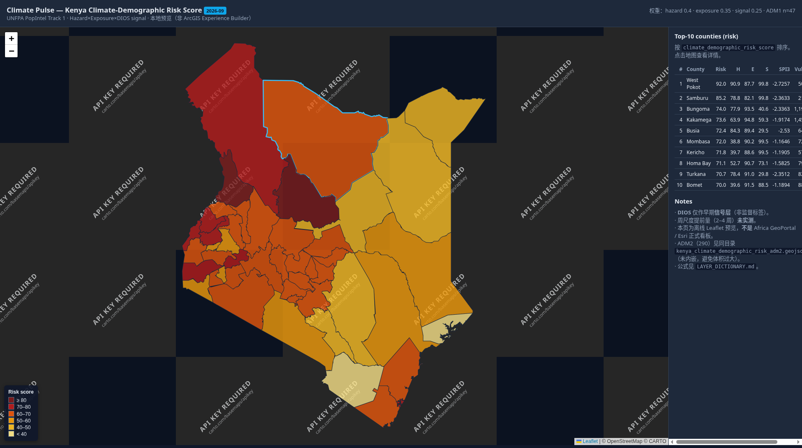
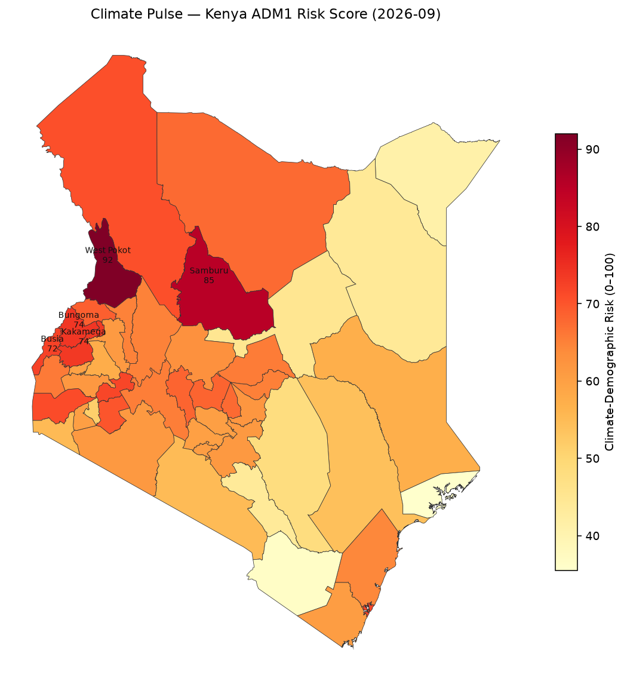
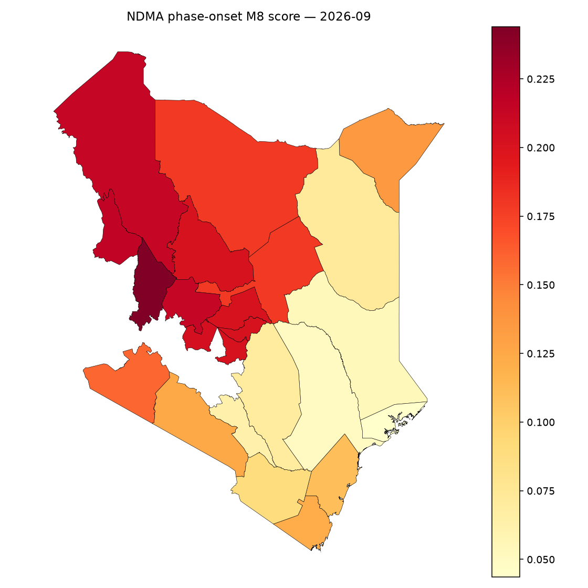

1. Country / track overview
Primary country for Track 1 depth: Kenya (KEN). Extended demos: Nigeria, Mexico, India (Multi4 dashboard).
Kenya
ADM1/ADM2 risk layers, Stress dashboard, Experience Builder (Owner-only).
Nigeria
Dashboard deployed; age-sex still national-share proxy.
Mexico
Dashboard deployed; fertility-only DIOS when present.
India
Dashboard deployed; short SPI reference; no DIOS on disk.
Official Track 1 components (verbatim)
- Climate Risk Layer — EO datasets standardised into Admin-2 grid
- Population Exposure Engine — WorldPop age-sex overlay
- DIOS Early Signal Layer — 2–4 week displacement warning
- Esri Operational Dashboard — ArcGIS Experience Builder
Source: pdp.unfpa.org/popInthackathon
2. Climate-Demographic Risk Score (prototype)
Association / fusion score for operational discussion — not a validated displacement probability.
Hazard from CHIRPS SPI-3; exposure from WorldPop (+ age-sex where available); signal from DIOS media inventory and/or climate modes. See docs/METHOD.md.
3. Operational views (preview + deep links)
Local map previews ship with this demo. Live Esri apps may refuse iframe embedding and require Owner login — use the cards in section 4 if embeds are blank.



Attempted live embed (Kenya Dashboard)
If blank: open via Open Kenya Dashboard (Owner-only).
4. Open in ArcGIS
All links Owner-only unless sharing is later changed. Credit: Xin Jin / Africa GeoPortal.
5. Open-source & methodology
- Package README — license, reproduce steps, exclusions
- METHOD.md — H×E×S weights & claim boundaries
- OFFICIAL_ALIGNMENT.md — web-verified gap table
- ARCGIS_ITEMS.md — URL inventory
- Kenya builder script · Multi-country builder
- Example Kenya ADM1 sample CSV
6. Gaps / limitations (honest)
| Item | Status | Why |
|---|---|---|
| Code open-sourced (package) | This package ready | Public GitHub push still needs user to connect GitHub + create repo URL |
| Sample PDP+ integration page | This page | Demo only — real PDP+ write access needs UNFPA platform |
| Esri dashboard deployed | Done (Owner-only) | Private Africa GeoPortal apps |
| Country pilot active | Not done | Needs UNFPA / country office engagement — cannot fake |
| Multi-country Experience Builder | Blocked | experience.arcgis.com site_error / timeouts historically |
| DIOS as measurable 2–4w displacement warning | Not evaluable | No gold displacement Y for P/R |
| Non-KEN true WorldPop age-sex overlay | Partial | NGA/MEX/IND still national-share proxy; large raster downloads left |
| Email ~60% precision | Unverified | Not found on public web (2026-11-09) |